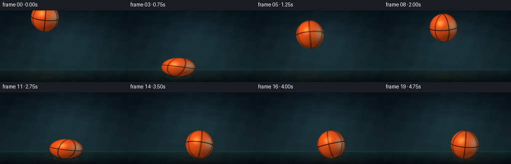
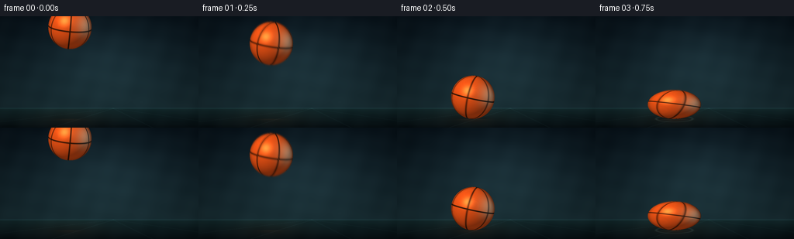
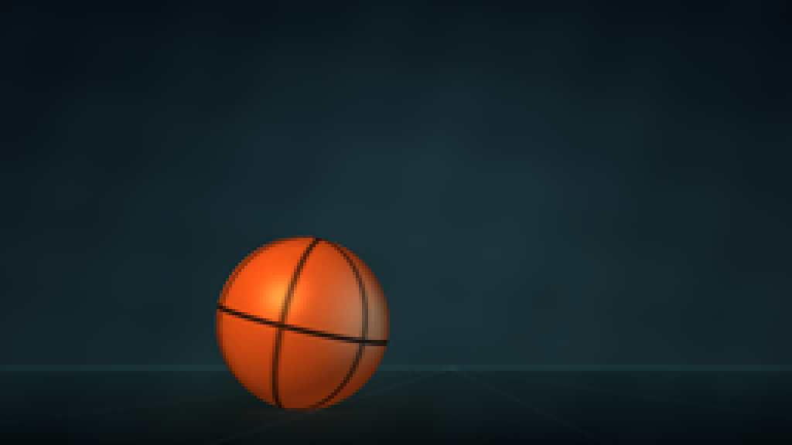
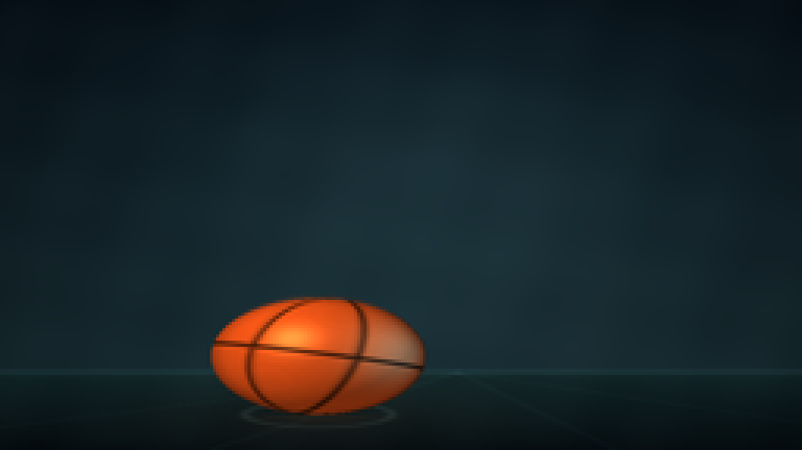
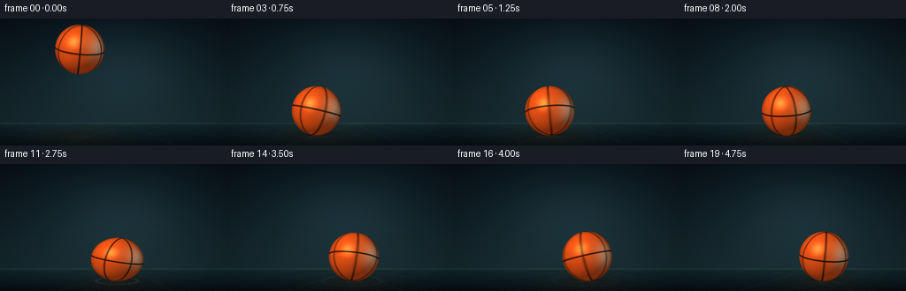
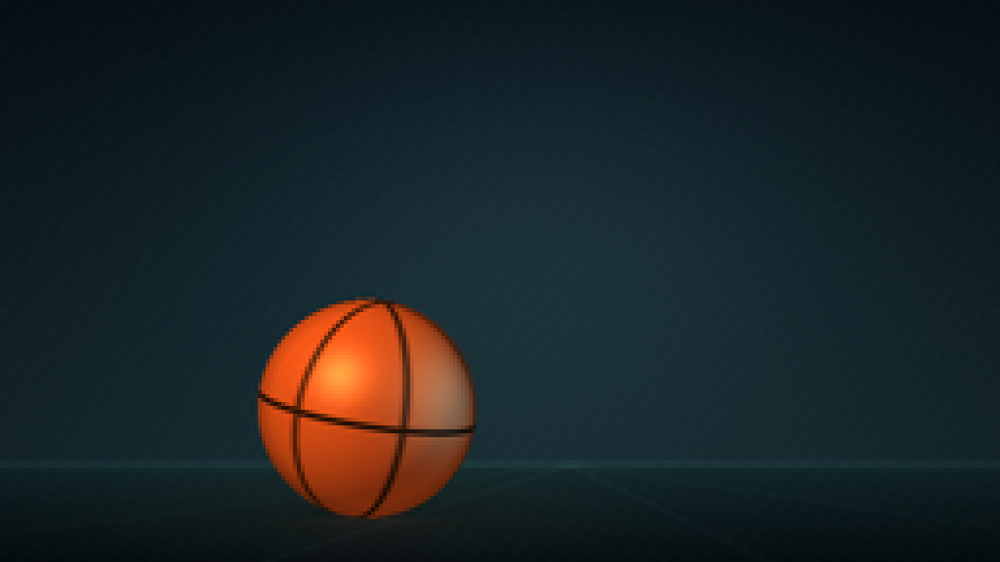
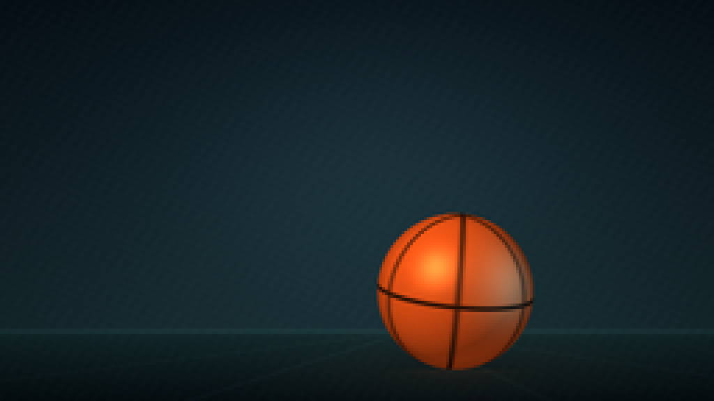

CODING AGENTS AS PIXEL WORLD MODELS
traex/DeepSeek-V4.1-Flash · phygen_027
点击播放 · 原生 RGB 像素
逐轮保存的候选
回放视频、检查图与代码变化。
每份候选均可单独播放。实际图片检查记录在下方工具轨迹中。
候选 01播放与检查图
点击播放 · 原生 RGB 像素

展开代码变化
--- 上一保存版本
+++ 本次保存版本
@@ -0,0 +1,313 @@
+from __future__ import annotations
+
+import math
+from pathlib import Path
+
+import numpy as np
+from PIL import Image, ImageDraw, ImageFilter
+
+from artifact_io import save
+
+
+CASE_DIR = Path(__file__).resolve().parent
+WIDTH, HEIGHT = 256, 144
+FRAMES, FPS = 20, 4.0
+SCALE = 3
+IW, IH = WIDTH * SCALE, HEIGHT * SCALE
+
+GROUND = 132.5
+HORIZON = 119.0
+BALL_RADIUS = 28.0
+START_X = 90.0
+HORIZONTAL_SPEED = 15.4
+INITIAL_Y = 14.0
+INITIAL_VY = 65.0
+GRAVITY = 150.0
+
+
+def smoothstep(edge0: float, edge1: float, x: np.ndarray) -> np.ndarray:
+ t = np.clip((x - edge0) / (edge1 - edge0), 0.0, 1.0)
+ return t * t * (3.0 - 2.0 * t)
+
+
+def make_impact_schedule() -> list[tuple[float, float, float, float]]:
+ """Return (time, incoming speed, outgoing speed, x) for each floor hit."""
+ event_t = 0.75
+ incoming = INITIAL_VY + GRAVITY * event_t
+ impacts: list[tuple[float, float, float, float]] = []
+ restitutions = [0.845, 0.500, 0.450, 0.360, 0.280]
+ for restitution in restitutions:
+ outgoing = incoming * restitution
+ x = START_X + HORIZONTAL_SPEED * event_t
+ impacts.append((event_t, incoming, outgoing, x))
+ event_t += 2.0 * outgoing / GRAVITY
+ incoming = outgoing
+ return impacts
+
+
+IMPACTS = make_impact_schedule()
+
+
+def ball_state(t: float) -> tuple[float, float, float]:
+ """Ball center and vertical velocity from the piecewise ballistic path."""
+ x = START_X + HORIZONTAL_SPEED * t
+ if t < IMPACTS[0][0]:
+ y = INITIAL_Y + INITIAL_VY * t + 0.5 * GRAVITY * t * t
+ vy = INITIAL_VY + GRAVITY * t
+ return x, y, vy
+
+ for index, (event_t, _, outgoing, _) in enumerate(IMPACTS):
+ next_t = IMPACTS[index + 1][0] if index + 1 < len(IMPACTS) else float("inf")
+ if event_t <= t < next_t:
+ dt = t - event_t
+ y = (GROUND - BALL_RADIUS) - outgoing * dt + 0.5 * GRAVITY * dt * dt
+ vy = -outgoing + GRAVITY * dt
+ return x, y, vy
+
+ return x, GROUND - BALL_RADIUS, 0.0
+
+
+def impact_deformation(t: float) -> tuple[float, float]:
+ strength = 0.0
+ for event_t, incoming, _, _ in IMPACTS:
+ proximity = math.exp(-((t - event_t) / 0.070) ** 2)
+ speed_weight = min(1.0, incoming / 165.0)
+ strength = max(strength, proximity * speed_weight)
+
+ # A tiny pre-impact anticipatory squash makes the sampled contact readable.
+ for event_t, incoming, _, _ in IMPACTS:
+ if 0.0 <= event_t - t < 0.060:
+ strength = max(strength, 0.14 * min(1.0, incoming / 165.0))
+
+ sy = 1.0 - 0.34 * strength
+ sx = 1.0 / math.sqrt(sy)
+ return sx, sy
+
+
+def rotation_matrix(spin: float) -> np.ndarray:
+ cy, sy = math.cos(spin), math.sin(spin)
+ cx, sx = math.cos(0.21), math.sin(0.21)
+ cz, sz = math.cos(-0.09), math.sin(-0.09)
+ ry = np.array([[cy, 0.0, sy], [0.0, 1.0, 0.0], [-sy, 0.0, cy]])
+ rx = np.array([[1.0, 0.0, 0.0], [0.0, cx, -sx], [0.0, sx, cx]])
+ rz = np.array([[cz, -sz, 0.0], [sz, cz, 0.0], [0.0, 0.0, 1.0]])
+ return rz @ rx @ ry
+
+
+def background(x_center: float, y_center: float) -> np.ndarray:
+ yy, xx = np.mgrid[0:IH, 0:IW].astype(np.float32)
+ yn = yy / max(1, IH - 1)
+ xn = xx / max(1, IW - 1)
+
+ top = np.array([8.0, 19.0, 27.0], dtype=np.float32)
+ wall_low = np.array([24.0, 45.0, 51.0], dtype=np.float32)
+ wall_t = np.clip(yn / (HORIZON / HEIGHT), 0.0, 1.0)[..., None]
+ img = top * (1.0 - wall_t) + wall_low * wall_t
+
+ # Broad, soft studio light behind the action.
+ glow_x = np.exp(-((xx - IW * 0.54) / (IW * 0.31)) ** 2)
+ glow_y = np.exp(-((yy - IH * 0.39) / (IH * 0.40)) ** 2)
+ glow = (0.70 * glow_x * glow_y)[..., None]
+ img += glow * np.array([16.0, 24.0, 25.0], dtype=np.float32)
+
+ floor_mask = yy >= HORIZON * SCALE
+ floor_depth = np.clip((yy - HORIZON * SCALE) / max(1.0, IH - HORIZON * SCALE), 0.0, 1.0)
+ floor_near = np.array([7.0, 16.0, 20.0], dtype=np.float32)
+ floor_far = np.array([20.0, 43.0, 46.0], dtype=np.float32)
+ floor = floor_far * (1.0 - floor_depth[..., None]) + floor_near * floor_depth[..., None]
+ img = np.where(floor_mask[..., None], floor, img)
+
+ # A restrained warm pool of light on the floor keeps the orange ball legible.
+ pool_x = np.exp(-((xx - x_center * SCALE) / (IW * 0.21)) ** 2)
+ pool_y = np.exp(-((yy - GROUND * SCALE) / (IH * 0.09)) ** 2)
+ pool = (0.34 * pool_x * pool_y * floor_mask)[..., None]
+ img += pool * np.array([34.0, 22.0, 11.0], dtype=np.float32)
+
+ # Fine perspective guide lines suggest a court without competing with the ball.
+ vanishing_x = IW * 0.57
+ vanishing_y = HORIZON * SCALE
+ for target_x, alpha in [(-0.24, 0.20), (0.26, 0.15), (0.77, 0.11), (1.24, 0.18)]:
+ dx = target_x * IW - vanishing_x
+ line_x = vanishing_x + dx * floor_depth
+ distance = np.abs(xx - line_x)
+ line = np.exp(-(distance / (1.2 * SCALE)) ** 2) * floor_mask * alpha
+ img += line[..., None] * np.array([34.0, 57.0, 58.0], dtype=np.float32)
+
+ # Horizon edge and vignette.
+ horizon_line = np.exp(-((yy - HORIZON * SCALE) / (0.9 * SCALE)) ** 2)
+ img += (0.24 * horizon_line)[..., None] * np.array([31.0, 60.0, 64.0], dtype=np.float32)
+ radial = ((xx - IW * 0.5) / (IW * 0.62)) ** 2 + ((yy - IH * 0.46) / (IH * 0.72)) ** 2
+ vignette = np.clip(1.0 - 0.23 * radial, 0.74, 1.0)[..., None]
+ img *= vignette
+
+ # Very light ordered texture prevents the broad gradients from looking sterile.
+ texture = (
+ np.sin(xx * 0.071 + yy * 0.019)
+ + np.sin(yy * 0.083 - xx * 0.013)
+ + np.sin((xx + yy) * 0.037)
+ ) * 0.42
+ img += texture[..., None] * np.array([1.4, 1.8, 1.9], dtype=np.float32)
+ return np.clip(img, 0.0, 255.0)
+
+
+def add_floor_effects(img: np.ndarray, t: float, x: float, y: float) -> np.ndarray:
+ height = max(0.0, GROUND - y)
+ sx = x * SCALE
+ ground = GROUND * SCALE
+
+ # Soft contact shadow: wider and fainter as the ball rises.
+ shadow_radius_x = (BALL_RADIUS * (0.68 + 0.35 * min(height / 70.0, 1.0))) * SCALE
+ shadow_radius_y = (3.4 + 2.2 * min(height / 70.0, 1.0)) * SCALE
+ shadow_alpha = 0.31 - 0.13 * min(height / 70.0, 1.0)
+
+ yy, xx = np.mgrid[0:IH, 0:IW].astype(np.float32)
+ shadow = np.exp(
+ -0.5 * ((xx - sx) / shadow_radius_x) ** 2
+ -0.5 * ((yy - ground) / shadow_radius_y) ** 2
+ )
+ shadow *= (yy >= HORIZON * SCALE) * shadow_alpha
+ img *= (1.0 - shadow[..., None] * np.array([0.78, 0.74, 0.68], dtype=np.float32))
+
+ # A narrow warm reflection appears mainly when the ball approaches the floor.
+ reflection_strength = 0.12 + 0.28 * math.exp(-height / 26.0)
+ reflection_x = np.exp(-((xx - sx) / (BALL_RADIUS * 0.64 * SCALE)) ** 2)
+ reflection_y = np.clip((yy - ground) / max(1.0, IH - ground), 0.0, 1.0)
+ reflection = reflection_x * np.exp(-reflection_y * 4.2) * (yy >= ground)
+ img += (reflection_strength * reflection)[..., None] * np.array(
+ [92.0, 38.0, 12.0], dtype=np.float32
+ )
+
+ # Short, expanding contact rings make each impact legible at low frame rate.
+ for event_t, _, _, event_x in IMPACTS:
+ age = t - event_t
+ if 0.0 <= age <= 0.20:
+ progress = age / 0.20
+ ring_rx = (BALL_RADIUS * (0.84 + 0.55 * progress)) * SCALE
+ ring_ry = (4.0 + 2.8 * progress) * SCALE
+ ring_distance = np.sqrt(
+ ((xx - event_x * SCALE) / ring_rx) ** 2
+ + ((yy - ground) / ring_ry) ** 2
+ )
+ ring = np.exp(-((ring_distance - 1.0) / 0.075) ** 2)
+ ring *= (yy >= HORIZON * SCALE) * (0.16 * (1.0 - progress))
+ img += ring[..., None] * np.array([92.0, 112.0, 103.0], dtype=np.float32)
+
+ return img
+
+
+def render_ball_sample(
+ t: float,
+ x: float,
+ y: float,
+ spin: float,
+ sx: float,
+ sy: float,
+) -> tuple[np.ndarray, np.ndarray]:
+ yy, xx = np.mgrid[0:IH, 0:IW].astype(np.float32)
+ cx, cy = x * SCALE, y * SCALE
+ radius = BALL_RADIUS * SCALE
+ u = (xx - cx) / (radius * sx)
+ v = (yy - cy) / (radius * sy)
+ r2 = u * u + v * v
+ mask = r2 <= 1.0
+ z = np.sqrt(np.maximum(0.0, 1.0 - r2))
+
+ p = np.stack((u, v, z), axis=-1)
+ q = p @ rotation_matrix(spin).T
+ qx, qy, qz = q[..., 0], q[..., 1], q[..., 2]
+
+ # Peppled leather: low-amplitude, rotating high-frequency detail.
+ grain = (
+ np.sin(qx * 103.0 + qy * 19.0)
+ * np.sin(qy * 89.0 - qz * 31.0)
+ + 0.55 * np.sin((qx - qz) * 127.0 + qy * 43.0)
+ )
+ base = np.empty((IH, IW, 3), dtype=np.float32)
+ base[:] = np.array([232.0, 82.0, 22.0], dtype=np.float32)
+ base *= (1.0 + grain[..., None] * 0.024)
+
+ light = np.array([-0.46, -0.56, 0.69], dtype=np.float32)
+ light /= np.linalg.norm(light)
+ diffuse = np.clip(p @ light, 0.0, 1.0)
+ half_vector = light + np.array([0.0, 0.0, 1.0], dtype=np.float32)
+ half_vector /= np.linalg.norm(half_vector)
+ specular = np.clip(p @ half_vector, 0.0, 1.0) ** 32
+
+ shade = 0.42 + 0.66 * diffuse
+ color = base * shade[..., None]
+ color += specular[..., None] * np.array([255.0, 178.0, 98.0], dtype=np.float32) * 0.45
+ color += np.clip(p[..., 1], 0.0, 1.0)[..., None] * np.array(
+ [32.0, 11.0, 3.0], dtype=np.float32
+ )
+
+ # Cool rim light on the shadow side separates the ball from the dark court.
+ rim_direction = np.array([0.74, -0.08, 0.67], dtype=np.float32)
+ rim_direction /= np.linalg.norm(rim_direction)
+ rim = np.clip(p @ rim_direction, 0.0, 1.0) ** 7
+ color += rim[..., None] * np.array([36.0, 70.0, 73.0], dtype=np.float32)
+
+ # Four smooth seam paths, including two curved side channels.
+ seam_width = 0.026
+ seams = [
+ np.abs(qy),
+ np.abs(qx),
+ np.abs(qx * 0.5 + qz * 0.8660254),
+ np.abs(qx * 0.5 - qz * 0.8660254),
+ ]
+ seam_field = np.minimum.reduce(seams)
+ seam_soft = 1.0 - smoothstep(seam_width * 0.55, seam_width * 1.65, seam_field)
+ seam_shadow = 1.0 - smoothstep(0.0, seam_width * 2.6, seam_field)
+ color *= (1.0 - seam_soft[..., None] * np.array([0.76, 0.72, 0.67], dtype=np.float32))
+ color -= seam_shadow[..., None] * np.array([9.0, 4.0, 2.0], dtype=np.float32)
+
+ # Subtle darkening at the silhouette improves the small-scale read.
+ edge = smoothstep(0.86, 1.0, np.sqrt(r2))
+ color *= (1.0 - 0.13 * edge[..., None])
+ color = np.clip(color, 0.0, 255.0)
+ color[~mask] = 0.0
+ return color, mask.astype(np.float32)
+
+
+def render_frame(frame_index: int) -> np.ndarray:
+ t = frame_index / FPS
+ x, y, _ = ball_state(t)
+ sx, sy = impact_deformation(t)
+ if sy < 1.0:
+ y = GROUND - BALL_RADIUS * sy
+
+ img = background(x, y)
+ img = add_floor_effects(img, t, x, y)
+
+ # Five subframe samples produce a restrained 1/25 s shutter.
+ shutter = 0.040
+ sample_offsets = np.linspace(-0.5, 0.5, 5)
+ weights = np.array([0.08, 0.20, 0.44, 0.20, 0.08], dtype=np.float32)
+ weights /= weights.sum()
+ accum_color = np.zeros((IH, IW, 3), dtype=np.float32)
+ accum_alpha = np.zeros((IH, IW), dtype=np.float32)
+
+ for offset, weight in zip(sample_offsets, weights):
+ st = max(0.0, t + offset * shutter)
+ sx_t, sy_t = impact_deformation(st)
+ bx, by, _ = ball_state(st)
+ if sy_t < 1.0:
+ by = GROUND - BALL_RADIUS * sy_t
+ spin = -2.55 * st + 0.52 * math.sin(st * 2.4)
+ color, alpha = render_ball_sample(st, bx, by, spin, sx_t, sy_t)
+ accum_color += color * alpha[..., None] * weight
+ accum_alpha += alpha * weight
+
+ out = img * (1.0 - accum_alpha[..., None]) + accum_color
+ out = np.clip(out, 0.0, 255.0).astype(np.uint8)
+ image = Image.fromarray(out, mode="RGB").resize((WIDTH, HEIGHT), Image.Resampling.LANCZOS)
+ return np.asarray(image, dtype=np.uint8)
+
+
+def generate() -> np.ndarray:
+ return np.stack([render_frame(index) for index in range(FRAMES)], axis=0)
+
+
+if __name__ == "__main__":
+ frames = generate()
+ save(frames, CASE_DIR)
+ print(f"saved {frames.shape} RGB frames to {CASE_DIR}")
候选 02播放与检查图
点击播放 · 原生 RGB 像素

展开代码变化
--- 上一保存版本
+++ 本次保存版本
@@ -20,9 +20,9 @@
BALL_RADIUS = 28.0
START_X = 90.0
HORIZONTAL_SPEED = 15.4
-INITIAL_Y = 14.0
-INITIAL_VY = 65.0
-GRAVITY = 150.0
+INITIAL_Y = 34.5
+INITIAL_VY = 80.0
+GRAVITY = 240.0
def smoothstep(edge0: float, edge1: float, x: np.ndarray) -> np.ndarray:
@@ -32,20 +32,23 @@
def make_impact_schedule() -> list[tuple[float, float, float, float]]:
"""Return (time, incoming speed, outgoing speed, x) for each floor hit."""
- event_t = 0.75
- incoming = INITIAL_VY + GRAVITY * event_t
+ event_times = [0.50, 1.50, 2.25, 2.75, 3.125, 3.375, 3.5625, 3.6875, 3.78125, 3.84375]
+ incoming = INITIAL_VY + GRAVITY * event_times[0]
impacts: list[tuple[float, float, float, float]] = []
- restitutions = [0.845, 0.500, 0.450, 0.360, 0.280]
- for restitution in restitutions:
- outgoing = incoming * restitution
+ for index, event_t in enumerate(event_times):
+ if index + 1 < len(event_times):
+ interval = event_times[index + 1] - event_t
+ outgoing = 0.5 * GRAVITY * interval
+ else:
+ outgoing = 7.5
x = START_X + HORIZONTAL_SPEED * event_t
impacts.append((event_t, incoming, outgoing, x))
- event_t += 2.0 * outgoing / GRAVITY
incoming = outgoing
return impacts
IMPACTS = make_impact_schedule()
+FINAL_CONTACT_T = IMPACTS[-1][0] + 2.0 * IMPACTS[-1][2] / GRAVITY
def ball_state(t: float) -> tuple[float, float, float]:
@@ -60,6 +63,8 @@
next_t = IMPACTS[index + 1][0] if index + 1 < len(IMPACTS) else float("inf")
if event_t <= t < next_t:
dt = t - event_t
+ if index == len(IMPACTS) - 1 and t >= FINAL_CONTACT_T:
+ return x, GROUND - BALL_RADIUS, 0.0
y = (GROUND - BALL_RADIUS) - outgoing * dt + 0.5 * GRAVITY * dt * dt
vy = -outgoing + GRAVITY * dt
return x, y, vy
@@ -142,10 +147,10 @@
# Very light ordered texture prevents the broad gradients from looking sterile.
texture = (
- np.sin(xx * 0.071 + yy * 0.019)
- + np.sin(yy * 0.083 - xx * 0.013)
- + np.sin((xx + yy) * 0.037)
- ) * 0.42
+ np.sin(xx * 0.43 + yy * 0.21)
+ + np.sin(yy * 0.67 - xx * 0.29)
+ + np.sin((xx + yy) * 0.37)
+ ) * 0.30
img += texture[..., None] * np.array([1.4, 1.8, 1.9], dtype=np.float32)
return np.clip(img, 0.0, 255.0)
@@ -299,7 +304,7 @@
out = img * (1.0 - accum_alpha[..., None]) + accum_color
out = np.clip(out, 0.0, 255.0).astype(np.uint8)
- image = Image.fromarray(out, mode="RGB").resize((WIDTH, HEIGHT), Image.Resampling.LANCZOS)
+ image = Image.fromarray(out).resize((WIDTH, HEIGHT), Image.Resampling.LANCZOS)
return np.asarray(image, dtype=np.uint8)
候选 03播放与检查图

可观测工具轨迹
实际执行的命令与返回图片。
命令 1exit 0
/bin/bash -c "pwd && rg --files -g '"'!**/.git/**'"' | sed -n '1,160p'"
命令 2exit 0
/bin/bash -c "sed -n '1,240p' prompt.txt"
命令 3exit 0
/bin/bash -c "sed -n '1,260p' GENERATION_RULES.md"
命令 4exit 0
/bin/bash -c "sed -n '1,300p' task_spec.json"
命令 5exit 0
/bin/bash -c "sed -n '1,260p' artifact_io.py"
命令 6exit 0
/bin/bash -c "sed -n '1,260p' player_template.html"
命令 7exit 0
/bin/bash -c "python - <<'PY' import importlib.util for m in ['numpy','PIL','cv2','imageio','matplotlib']: print(m, bool(importlib.util.find_spec(m))) PY"
命令 8exit 0
/bin/bash -c 'python generate.py'
命令 9exit 0
/bin/bash -c "python - <<'PY'
from PIL import Image
from pathlib import Path
for n in [0,1,2,3,4,6,12,19]:
im=Image.open(f'frames/{n:02d}.png')
im.resize((1024,576), Image.Resampling.NEAREST).save(f'.tmp/frame_{n:02d}_x4.png')
PY"命令 10exit 0
/bin/bash -c 'mkdir -p candidates/v1 && cp -a frames inspection.png transition_check.png pixels.npz index.html candidates/v1/'
命令 11exit 0
/bin/bash -c 'python generate.py'
命令 12exit 0
/bin/bash -c "python - <<'PY'
from PIL import Image
from pathlib import Path
for n in [0,1,2,3,4,6,9,11,19]:
im=Image.open(f'frames/{n:02d}.png')
im.resize((1024,576), Image.Resampling.NEAREST).save(f'.tmp/v2_{n:02d}.png')
PY"命令 13exit 0
/bin/bash -c "python - <<'PY'
from pathlib import Path
import json, numpy as np
from PIL import Image
frames = np.stack([np.asarray(Image.open(p)) for p in sorted(Path('frames').glob('*.png'))])
print('frames', frames.shape, frames.dtype, 'min/max', int(frames.min()), int(frames.max()))
print('frame means', np.round(frames.mean(axis=(1,2,3)), 2).tolist())
print('successive mean abs diff', np.round(np.abs(np.diff(frames.astype(np.int16), axis=0)).mean(axis=(1,2,3)), 2).tolist())
z = np.load('pixels.npz')['pixels']
print('pixels.npz', z.shape, z.dtype)
html = Path('index.html').read_text()
print('player payload', '__DATA__' not in html, 'pixelReady' in html, 'bytes', len(html))
print('outputs', [p.name for p in sorted(Path('.').glob('*')) if p.is_file()])
PY"命令 14exit 0
/bin/bash -c 'git status --short 2>/dev/null || true'
视觉工具实际返回图片 1

视觉工具实际返回图片 2

视觉工具实际返回图片 3

视觉工具实际返回图片 4

视觉工具实际返回图片 5

视觉工具实际返回图片 6

视觉工具实际返回图片 7
视觉工具实际返回图片 8
视觉工具实际返回图片 9
视觉工具实际返回图片 10

视觉工具实际返回图片 11
视觉工具实际返回图片 12
视觉工具实际返回图片 13

保存候选 3 份；完成命令 14 次；可验证图片返回 13 张。原始 API 响应与完整日志保留在本地。